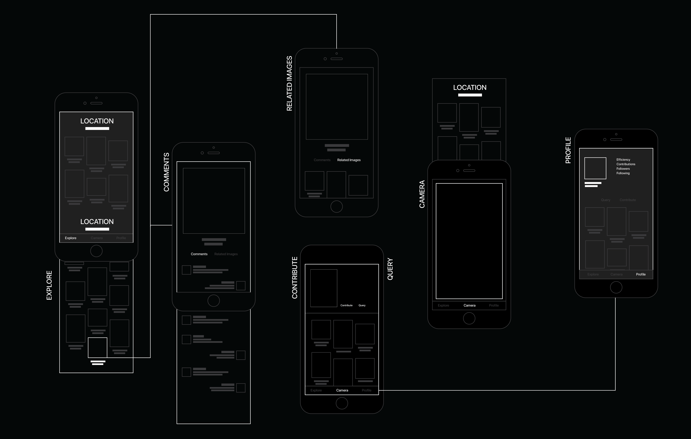
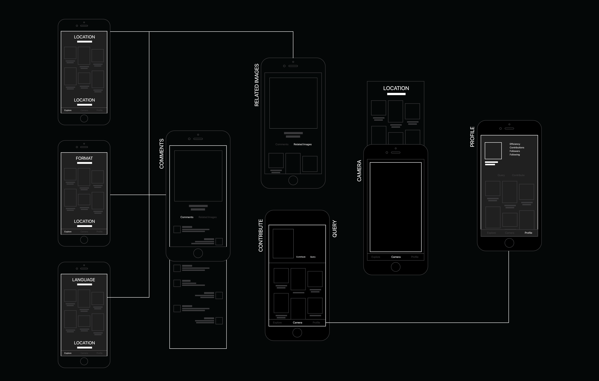
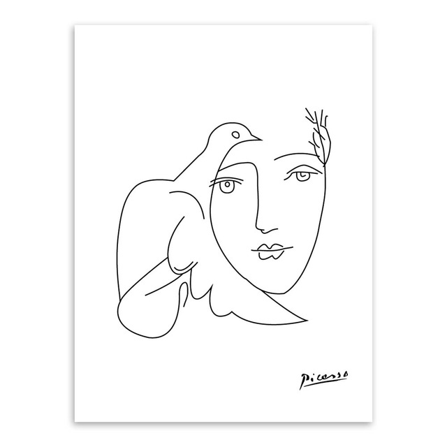
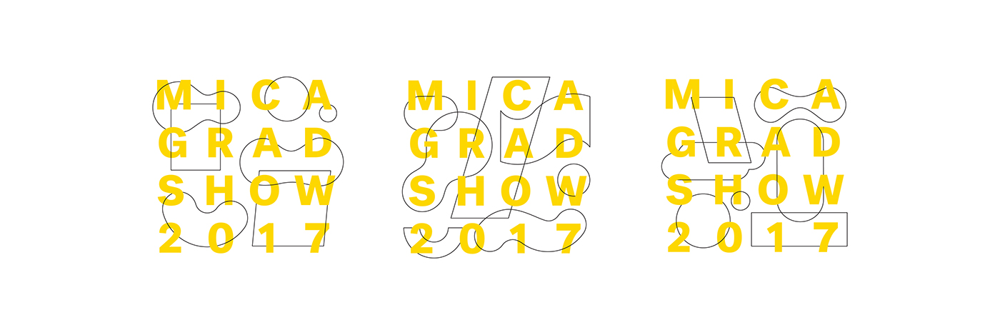
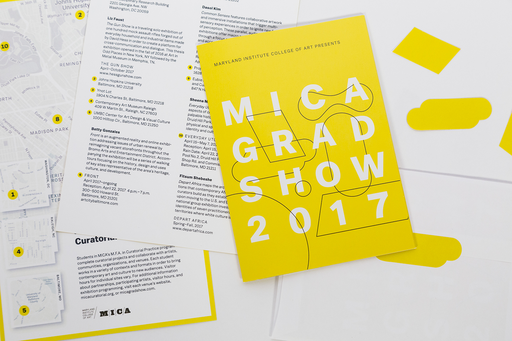
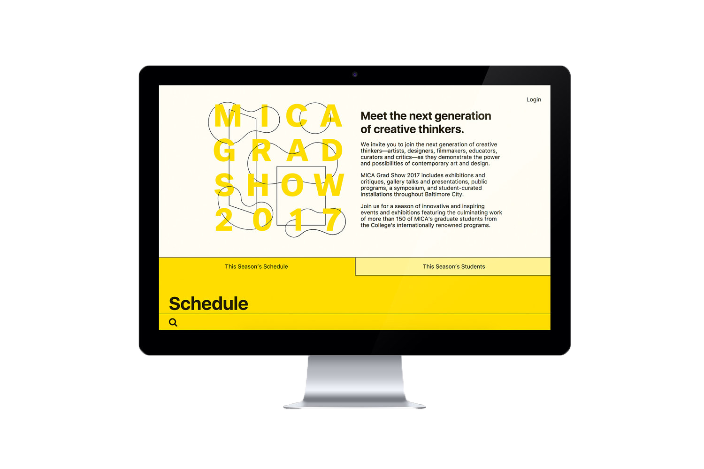
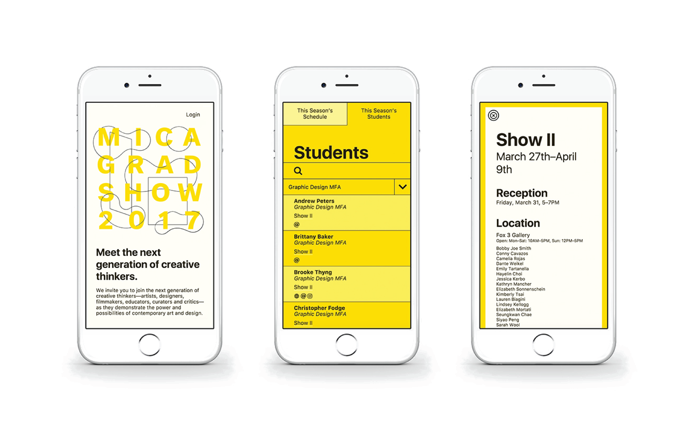
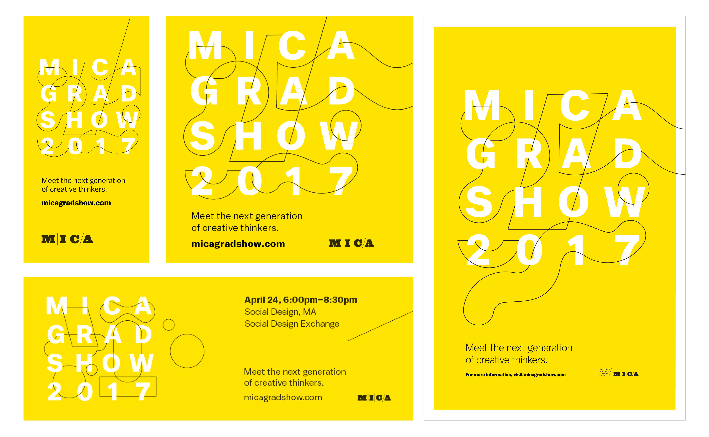
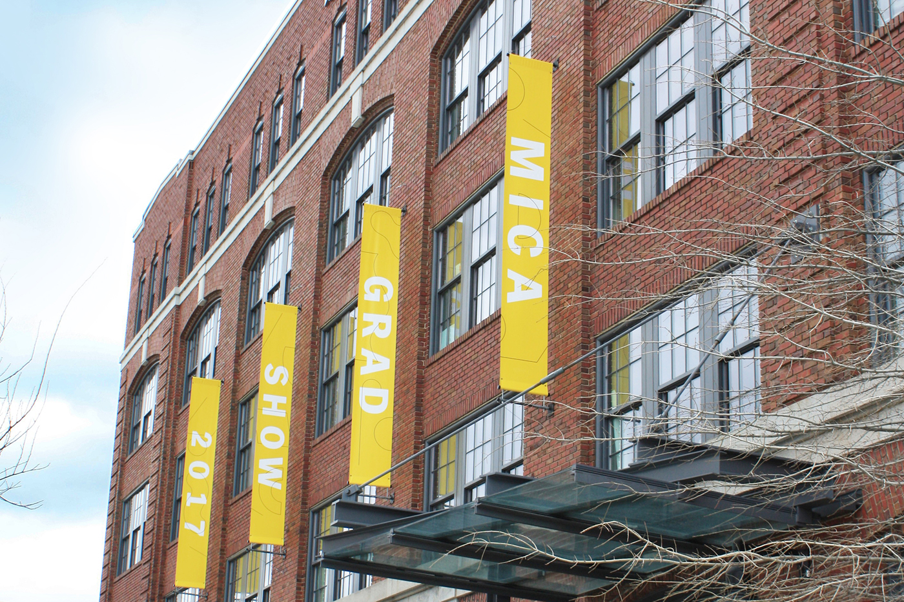
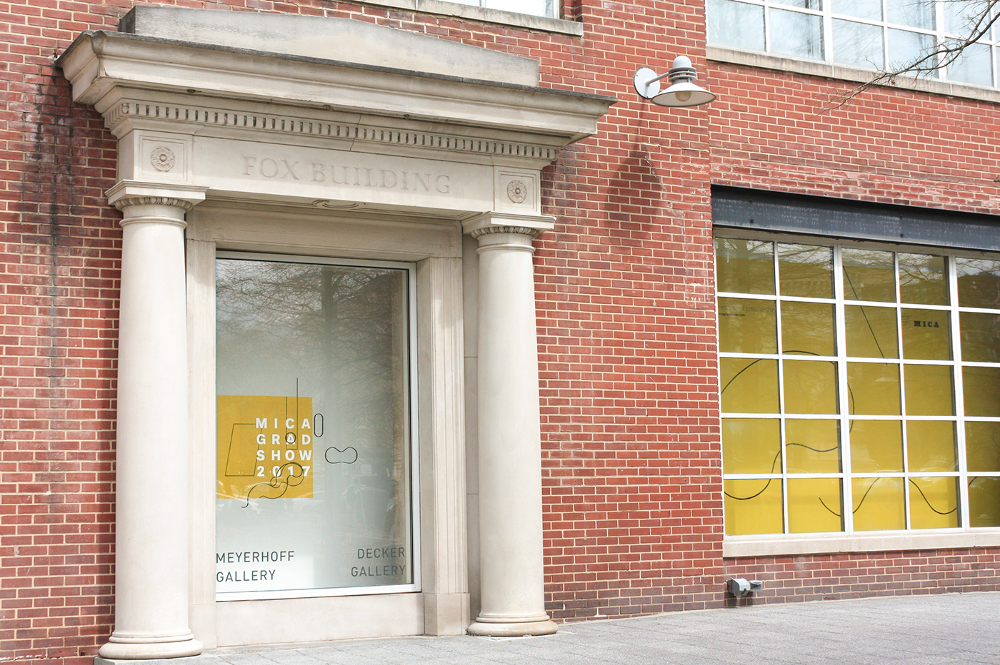

Since communication around the world was our main goal, LOCATION became the starting point in our userflow. But we soon realized it was limiting the user interaction.

Based on the way people travel and take photos, three starting points emerged:
LOCATION (countries, cities,.etc),
FORMAT (signage, books, newspapers,.etc)
Language.

Face of Peace, Picasso, unknown year
Takehiko Mizutani, material study from the preliminary course,1927 / Bauhaus-Archiv Berlin

As a representation of 16 different graduate programs, it was important that this identity system highlights connections between all MICA artists.


The website was designed in a way that would easily provide the schedule and the students that have been graduating that year.

One of the major features that was added during this year’s gradshow website was the showcase of student portfolios. It served as a great repository of student information for company recruiters.

Collaterals across different formats.

Environmental Signage
